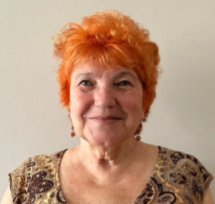

"Vispirms Tev bērnā jāierauga cilvēks."
Siguldas pilsētas vidusskolā strādāja no 2011. līdz 2022.gadam
Intervētāja Milda Ozoliņa
Kā sākās Jūsu stāsts ar mūsu skolu?
Stāstam ir divi posmi, divi sākumi. Vispirms mani palūdza darba savienošanas kārtībā aizvietot dažas stundas vairākās klasēs. Tad pāris gadus braukāju uz turieni, jo mana skola bija Laurenčos. Vēlāk mūsu skolu likvidēja, jo bērnu palika maz - kā jau tajā laikā. Tad paliku bez darba un kādu laiku biju bezdarbniece. Tā kā skolas vadība, toreizējā direktore Irina, mani jau zināja, mani uzaicināja strādāt skolā pastāvīgi.
Kādu Jūs atceraties skolu savā pirmajā darba dienā?
Vai domāta fiziskā vide?
Jā!
Es biju ļoti pārsteigta par to, ka tik vecā ēkā viss ir tik ļoti sakārtots - katrs stūrītis! Vēlāk uzzināju, ka saimnieks kopā ar dažiem palīgiem visu dara savām rokām - sākot ar griestiem un beidzot ar sienām, grīdām un noformējumu. Ieejot vecajā ēkā, bija ļoti mājīga sajūta.
Vai bija kāds brīdis, kad sapratāt - jā, šī ir īstā profesija?
Jā, tas brīdis bija ļoti sen. Mācījos augstskolas 3. kursā, kad devos pirmajā pedagoģiskajā praksē Laurenču skolā, kur vēlāk arī strādāju. Tad sapratu, ka man patīk vadīt stundas.
Kādu priekšmetu Jūs pasniedzāt mūsu skolā?
Angļu valodu. Taču pamatā strādāju kā mācību pārzine. Stundas vadīju, lai uzturētu kontaktu ar bērniem.
Kāds ir smieklīgākais vai neparastākais notikums, ko piedzīvojāt skolā?
To atceros vēl šodien! Tā bija 9. klase, taču neatceros, vai viņus mācīju jau no 5. klases vai pievienojos vēlāk. Kā ierasts, pēc tēmas noslēguma bija pārbaudes darbs - tests. Skolēni rakstīja testu, kura uzdevumi bija tikai skolotāja grāmatā, bet skolēniem tika izsniegtas kopētas lapas. Sāku labot darbus - pirmais bija ideāls, otrais arī ideāls. Paņēmu darbu skolēnam, kuram parasti tik labi neveicās, un arī tas bija perfekts. Sapratu, ka viss ir norakstīts - skolēni kaut kā bija tikuši pie manas grāmatas un izdalījuši pareizās atbildes. Nākamajā stundā bija jūtams, ka visi gaida rezultātus. Es pateicos visiem par to, ka nebija daudz jālabo, un tad visi saprata, ka nojaušu, kas noticis. Visi atzinās, un mēs kopā pasmējāmies. Pastāstīju arī par to, kā mēs savulaik špikojām un norakstījām. Klase uzrakstīja testa otro variantu, un viss bija kārtībā. Pēc tam aprunājos ar klases audzinātāju, kura izrādījās jau bija nojautusi skolēnu plānu. Skolēniem teicu, ka šādos gadījumos vismaz kāda kļūda tomēr jāatstāj.
Kas skolotājas darbā Jums sagādāja vislielāko prieku?
Vislielākais prieks ir redzēt skolēnu atdevi, aktivitāti un atsaucību stundā - ka esi trāpījis viņu interesēs un atradis pareizo veidu, kā pasniegt tēmu. Protams, svarīgi ir arī noslēguma pārbaudījumu rezultāti, pēc kuriem var redzēt, kas ir izdevies un pie kā vēl jāstrādā.
Vai ir kāda skolas tradīcija vai pasākums, kas Jums īpaši palicis atmiņā?
Pateicoties ārpusklases darba organizatorei Vinetai, kurai bija lieliska izdoma, man šajā skolā patika daudzi pasākumi. Īpaši patika koru kari. Vienmēr brīnījos, cik ļoti jaunieši tajos iesaistās. Atmiņā noteikti palicis arī tas 9. klases izlaidums, kurā skolu absolvēja mans mazdēls.
Ko darbs skolā Jums iemācīja ne tikai kā skolotājai, bet arī kā cilvēkam?
Šis darbs man iemācīja divas ļoti svarīgas lietas - cilvēcību un empātiju. Nesen izlasīju grāmatu, kurā ļoti labi tika skaidrota cilvēcība. Vispirms bērnā ir jāierauga cilvēks. Nav pareizi teikt, ka viņš ir tikai bērns, jo viņš ir personība ar savu vecumu, interesēm un raksturu. Empātija nozīmē saprast, kad bērnam ir grūti, mēģināt izzināt iemeslus un iejusties viņa situācijā. Citādi īsts kontakts neveidosies.
Ja varētu uz vienu dienu atgriezties mūsu skolā kā skolotāja, ko Jūs darītu vispirms?
Vispirms sasveicinātos ar kolēģiem un tad ietu pie stundu saraksta.
Ko Jūs gribētu novēlēt skolai tās 15. dzimšanas dienā?
Man ir divi novēlējumi. Pirmais - lai skola beidzot sagaida renovāciju, jo apkārtējā vide ļoti ietekmē gan skolēnu, gan skolotāju labsajūtu. Otrais - lai turpinās radošā dzirksts, programmas un projekti, kas jau iesākti.
Paldies Jums mīļš!
Ņem par labu!
SĀKUMS